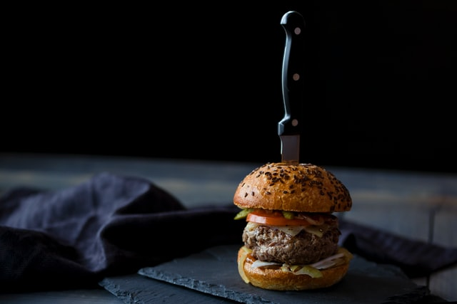

Classic Cheeseburger

Description
Ground chuck steak patties drenched in cheese and dripping with juices. Eroticism incarnate.
Ingredients
- 1/2 pound ground beef
- 1 ounce grated white Cheddar
- 1 medium onion
- Salt
- Black Pepper
- Brioche buns
Steps
- Preheat an air fryer to 370 degrees F (188 degrees C).
- Mix ground beef, Cheddar cheese, French-fried onions, ranch mix, sazon seasoning, salt, and pepper together in a medium bowl. Shape into two equal hamburger patties.
- Air fry until internal thermometer is at least 160 degrees F (70 degrees C), about 6 minutes.
Back to Index